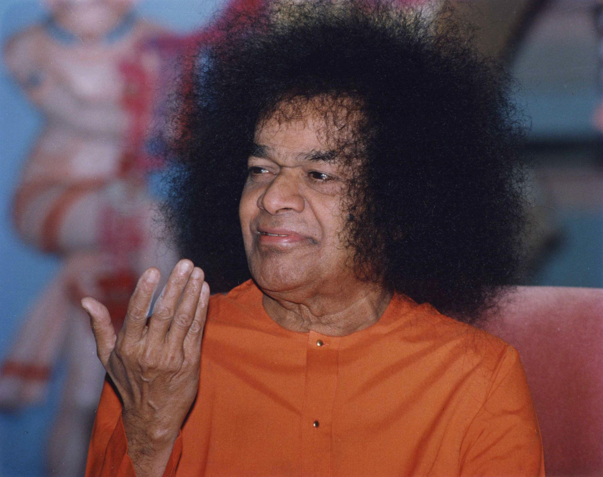

Avatar Declaration Day
We mark Avatar Declaration Day with devotion and study across centers.

Sri Sathya Sai International Organization · USA
We gather for devotion, service, and friendship in Northern California and Nevada. You are welcome here.
The main objective of the Sathya Sai Organization ... is to help you recognize the divinity inherent in you. So, your duty is to emphasize the One, to experience the One in all you do or speak. Do not give importance to differences of religion, sect, status, or color. Have the feeling of one-ness permeate all your acts. Only those who do so have a place in this Organization; the rest can withdraw.
Gatherings
The next three events, as of Oct 7, 2026.
We mark Avatar Declaration Day with devotion and study across centers.
Regional 24-hour akhanda bhajan at Aria University, Milpitas.
Centers and the region celebrate Sri Sathya Sai Baba's Birthday each year.
Thought for the day
There is only one Caste, the Caste of Humanity; There is only one Religion, the Religion of Love; There is only one Language, the Language of the Heart; There is only One God, and He is Omnipresent.
Sai Centers
21 Sai Centers and Groups across Northern California and Nevada meet each week for devotion, study, and service.
Live streaming starts Saturday, November 14, 2026 at 5:00 PM PT